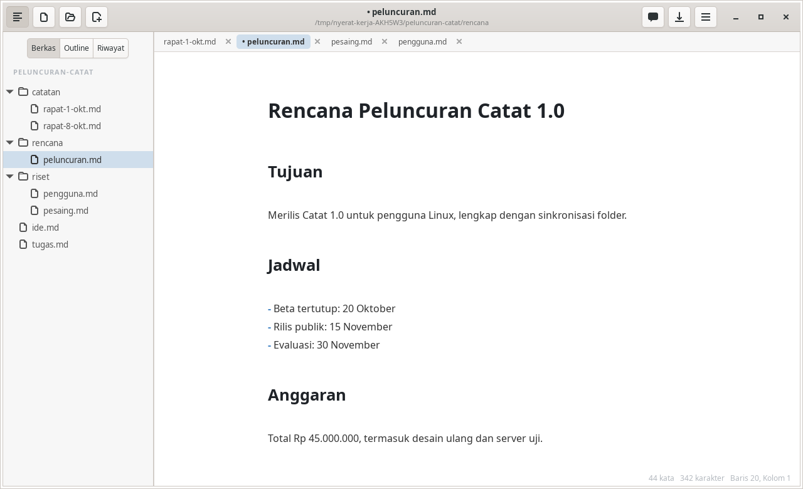

Ruang kerja
Berkas, tab, dan sidebar
Buka sebuah folder sebagai ruang kerja, kelola berkasnya dari pohon, dan kerjakan beberapa dokumen sekaligus sebagai tab.
Sidebar
Ctrl+\ menampilkan atau menyembunyikan sidebar. Ada tiga tab:
- Berkas: pohon folder kerja berisi subfolder dan berkas Markdown
- Outline: daftar heading dokumen; klik untuk melompat
- Riwayat: commit Git untuk berkas yang dibuka (Riwayat Git)

Pohon berkas
- Buka folder lewat tombol folder di header bar atau Ctrl+Shift+O. Folder terakhir dibuka lagi saat aplikasi dijalankan.
- Klik kanan untuk File Baru…, Folder Baru…, Papan Kanban Baru…, Ganti Nama…, dan Hapus (ke Tempat Sampah, dengan konfirmasi).
- Seret dan lepas untuk memindahkan berkas atau folder. Nama yang bentrok ditolak tanpa menimpa, dan dokumen yang terbuka mengikuti path barunya.
- Pohon diperbarui otomatis saat ada berkas yang ditambah atau dihapus di disk.
- Berkas dan folder tersembunyi serta
node_modulestidak ditampilkan.
Banyak dokumen sebagai tab
- Membuka berkas dari pohon atau dialog Buka File membuat tab baru, atau pindah ke tabnya bila sudah terbuka.
- Tiap tab punya riwayat undo, kursor, dan posisi gulir sendiri. Tanda
•berarti belum disimpan. - Ctrl+W menutup tab; Ctrl+Tab / Ctrl+Shift+Tab berpindah tab.
- Saat aplikasi dibuka lagi tanpa argumen, tab berfile dipulihkan dengan urutan, tab aktif, dan posisi kursornya.
- Agent membaca isi tab yang belum disimpan, bukan versi di disk.
